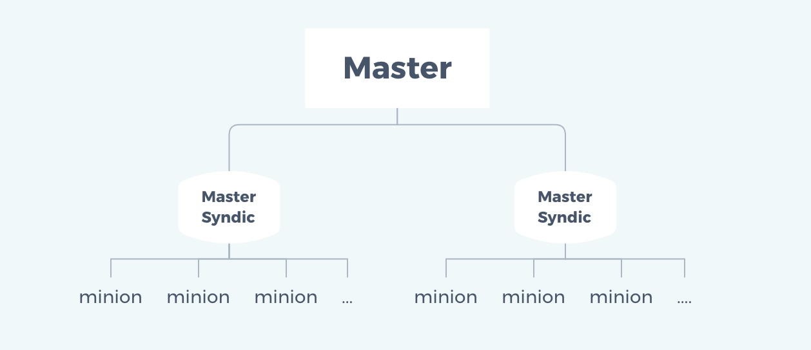

SaltStack进阶

文章目录
1. masterless
1.1 应用场景
- master 与 minion 网络不通或通信有延迟，即网络不稳定
- 想在 minion 端直接执行状态
传统的 SaltStack 是需要通过 master 来执行状态控制 minion 从而实现状态的管理，但是当网络不稳定的时候，当想在minion本地执行状态的时候，当在只有一台主机的时候，想执行状态该怎么办呢？这就需要用到 masterless 了。
有了masterless，即使你只有一台主机，也能玩saltstack，而不需要你有N台主机架构。
1.2 masterless配置
1.2.1 修改配置文件minion
- 注释master行
- 取消注释file_client并设其值为local
- 设置file_roots
- 设置pillar_roots
1 2 3 4 5 6 7 8 9 10 |
[root@minion ~]# vim /etc/salt/minion
....此处省略N行
# resolved, then the minion will fail to start.
# master: salt //注释此行
....此处省略N行
file_client: local //取消此行注释并将值设为local
....此处省略N行
file_roots: //设置file_roots的路径和环境，可有多套环境
base:
- /srv/salt/ |
1.2.2 关闭salt-minion服务
使用 masterless 模式时是不需要启动任何服务的，包括salt-master和salt-minion。
1 2 3 |
[root@minion ~]# systemctl stop salt-minion [root@minion ~]# systemctl disable salt-minion Removed symlink /etc/systemd/system/multi-user.target.wants/salt-minion.service. |
1.2.3 salt-call
masterless模式执行模块或状态时需要使用salt-call命令，而不再是salt或者salt-ssh。需要注意的是要使用salt-call的--local选项。
1 2 3 4 5 6 7 8 9 10 11 12 13 14 15 16 17 18 19 20 21 22 23 24 25 |
[root@minion ~]# salt-call --local cmd.run 'uptime'
local:
21:16:41 up 6:06, 1 user, load average: 0.00, 0.01, 0.05
[root@minion ~]# salt-call --local cmd.run 'ls -l /root'
local:
total 12
-rw-------. 1 root root 1313 Jun 13 21:37 anaconda-ks.cfg
-r-------- 1 root root 18 Jul 23 22:33 b
-rw-r--r-- 1 root root 35 Jul 23 22:25 cca
dr-------- 2 itw itw 6 Jul 23 21:47 haha
[root@minion ~]# salt-call --local cmd.run 'echo "hehe" > /root/henhen'
local:
[root@minion ~]# salt-call --local cmd.run 'ls -l /root'
local:
total 16
-rw-------. 1 root root 1313 Jun 13 21:37 anaconda-ks.cfg
-r-------- 1 root root 18 Jul 23 22:33 b
-rw-r--r-- 1 root root 35 Jul 23 22:25 cca
dr-------- 2 itw itw 6 Jul 23 21:47 haha
-rw-r--r-- 1 root root 5 Jul 24 21:18 henhen
[root@minion ~]# salt-call --local cmd.run 'cat /root/henhen'
local:
hehe |
2. salt-master高可用
2.1 salt-master高可用配置
我们需要用salt来管理公司的所有机器，那么salt的master就不能宕机，否则就会整个瘫痪，所以我们必须要对salt进行高可用。salt的高可用配置非常简单，只需要改一下minion配置文件，将master用列表的形式列出即可。
1 2 3 4 5 6 7 |
[root@minion ~]# vim /etc/salt/minion ....此处省略N行 master: - 192.168.153.136 - 192.168.153.142 master_type: failover ....此处省略N行 |
本例列出的136和142上必须都安装了salt-master且保证服务都是正常状态。
2.2 salt-master高可用之数据同步
涉及到高可用时，数据的同步是个永恒的话题，我们必须保证高可用的2个master间使用的数据是一致的，包括：
- /etc/salt/pki下的所有key
- /srv/下的salt和pillar目录下的所有文件
保障这些数据同步的方案有：
- nfs挂载
- rsync同步
- 使用gitlab进行版本控制
安全相关： 为保证数据的同步与防止丢失，可将状态文件通过gitlab进行版本控制管理。
3. salt-syndic分布式架构
3.1 salt-syndic架构图

3.2 salt-syndic的优劣势
优势：
- 可以通过syndic实现更复杂的salt架构
- 减轻master的负担
劣势：
- syndic的/srv目录下的salt和pillar目录内容要与最顶层的master下的一致，所以要进行数据同步，同步方案同salt-master高可用
- 最顶层的master不知道自己有几个syndic，它只知道自己有多少个minion，并不知道这些minion是由哪些syndic来管理的
3.3 salt-syndic部署
3.3.1 环境说明
| 主机IP | 角色 | 安装的应用 |
|---|---|---|
| 192.168.153.136 | Master | salt-master |
| 192.168.153.142 | Syndic | salt-master salt-syndic |
| 192.168.153.141 | Minion | salt-minion |
| 192.168.153.148 | Minion | salt-minion |
3.3.2 安装salt-master与salt-syndic
在192.168.153.142上安装salt-master与salt-syndic，安装前请自行配置yum源
1
|
[root@syndic ~]# yum -y install salt-master salt-syndic |
3.3.3 配置master
修改master的master配置文件
- 取消注释order_master
- 将order_master的值设为True
1 2 3 4 5 6 7 |
[root@master ~]# vim /etc/salt/master .....此处省略N行 # masters' syndic interfaces. order_masters: True [root@master ~]# systemctl enable salt-master [root@master ~]# systemctl restart salt-master |
3.3.4 配置syndic
修改syndic所在主机的master配置文件
- 取消注释syndic_master
- 将syndic_master的值设为master的IP
1 2 3 4 5 6 7 8 9 10 |
[root@syndic ~]# vim /etc/salt/master .....此处省略N行 syndic_master: 192.168.153.136 [root@syndic ~]# systemctl enable salt-master Created symlink from /etc/systemd/system/multi-user.target.wants/salt-master.service to /usr/lib/systemd/system/salt-master.service. [root@syndic ~]# systemctl enable salt-syndic Created symlink from /etc/systemd/system/multi-user.target.wants/salt-syndic.service to /usr/lib/systemd/system/salt-syndic.service. [root@syndic ~]# systemctl restart salt-master [root@syndic ~]# systemctl restart salt-syndic |
3.3.5 配置minion
配置minion，将master指向syndic所在主机
1 2 3 4 5 6 7 |
[root@minion ~]# vim /etc/salt/minion .....此处省略N行 master: 192.168.153.142 [root@minion ~]# systemctl restart salt-minion [root@minion ~]# systemctl enable salt-minion Created symlink from /etc/systemd/system/multi-user.target.wants/salt-minion.service to /usr/lib/systemd/system/salt-minion.service. |
在所有minion上做同样的操作，注意，要设置minion配置文件中的id参数，指向minion自身的ip地址或主机名，必须能够唯一标识minion本机。
3.3.6 在syndic上接受minion主机的key
1 2 3 4 5 6 7 8 9 10 11 12 13 14 15 16 17 18 19 20 21 22 |
[root@syndic ~]# salt-key -L Accepted Keys: Denied Keys: Unaccepted Keys: 192.168.153.141 192.168.153.148 Rejected Keys: [root@syndic ~]# salt-key -A The following keys are going to be accepted: Unaccepted Keys: 192.168.153.141 192.168.153.148 Proceed? [n/Y] Y Key for minion 192.168.153.141 accepted. Key for minion 192.168.153.148 accepted. [root@syndic ~]# salt-key Accepted Keys: 192.168.153.141 192.168.153.148 Denied Keys: Unaccepted Keys: Rejected Keys: |
3.3.7 在master上接受syndic主机的key
1 2 3 4 5 6 7 8 9 10 11 12 13 14 15 16 17 18 19 20 21 22 |
[root@master ~]# salt-key -L Accepted Keys: Denied Keys: Unaccepted Keys: 192.168.153.142 192.168.153.141 Rejected Keys: [root@master ~]# salt-key -A The following keys are going to be accepted: Unaccepted Keys: 192.168.153.142 192.168.153.141 Proceed? [n/Y] Y Key for minion 192.168.153.142 accepted. Key for minion master accepted. [root@master ~]# salt-key -L Accepted Keys: 192.168.153.142 192.168.153.141 Denied Keys: Unaccepted Keys: Rejected Keys: |
3.3.8 在master上执行模块或状态检验有几个minion应答
1 2 3 4 5 6 7 8 9 |
[root@master ~]# salt '*' test.ping
192.168.153.141:
True
192.168.153.142:
True
192.168.153.148:
True
192.168.153.141:
True |